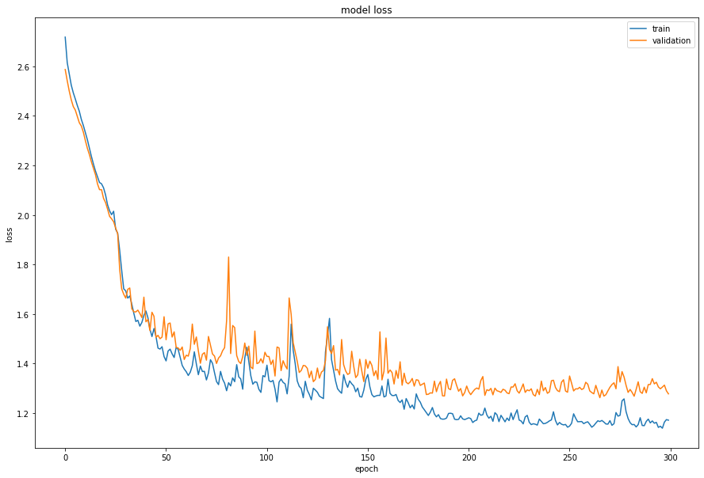
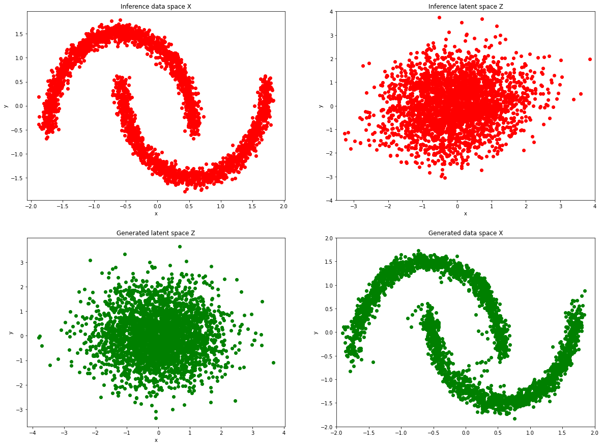

Density estimation using Real NVP
Authors: Mandolini Giorgio Maria, Sanna Daniele, Zannini Quirini Giorgio
Date created: 2020/08/10
Last modified: 2020/08/10
Description: Estimating the density distribution of the "double moon" dataset.

Introduction
The aim of this work is to map a simple distribution - which is easy to sample and whose density is simple to estimate - to a more complex one learned from the data. This kind of generative model is also known as "normalizing flow".
In order to do this, the model is trained via the maximum likelihood principle, using the "change of variable" formula.
We will use an affine coupling function. We create it such that its inverse, as well as the determinant of the Jacobian, are easy to obtain (more details in the referenced paper).
Requirements:
- Tensorflow 2.9.1
- Tensorflow probability 0.17.0
Reference:
Density estimation using Real NVP
Setup
import tensorflow as tf
from tensorflow import keras
from tensorflow.keras import layers
from tensorflow.keras import regularizers
from sklearn.datasets import make_moons
import numpy as np
import matplotlib.pyplot as plt
import tensorflow_probability as tfp
Load the data
data = make_moons(3000, noise=0.05)[0].astype("float32")
norm = layers.Normalization()
norm.adapt(data)
normalized_data = norm(data)
Affine coupling layer
# Creating a custom layer with keras API.
output_dim = 256
reg = 0.01
def Coupling(input_shape):
input = keras.layers.Input(shape=input_shape)
t_layer_1 = keras.layers.Dense(
output_dim, activation="relu", kernel_regularizer=regularizers.l2(reg)
)(input)
t_layer_2 = keras.layers.Dense(
output_dim, activation="relu", kernel_regularizer=regularizers.l2(reg)
)(t_layer_1)
t_layer_3 = keras.layers.Dense(
output_dim, activation="relu", kernel_regularizer=regularizers.l2(reg)
)(t_layer_2)
t_layer_4 = keras.layers.Dense(
output_dim, activation="relu", kernel_regularizer=regularizers.l2(reg)
)(t_layer_3)
t_layer_5 = keras.layers.Dense(
input_shape, activation="linear", kernel_regularizer=regularizers.l2(reg)
)(t_layer_4)
s_layer_1 = keras.layers.Dense(
output_dim, activation="relu", kernel_regularizer=regularizers.l2(reg)
)(input)
s_layer_2 = keras.layers.Dense(
output_dim, activation="relu", kernel_regularizer=regularizers.l2(reg)
)(s_layer_1)
s_layer_3 = keras.layers.Dense(
output_dim, activation="relu", kernel_regularizer=regularizers.l2(reg)
)(s_layer_2)
s_layer_4 = keras.layers.Dense(
output_dim, activation="relu", kernel_regularizer=regularizers.l2(reg)
)(s_layer_3)
s_layer_5 = keras.layers.Dense(
input_shape, activation="tanh", kernel_regularizer=regularizers.l2(reg)
)(s_layer_4)
return keras.Model(inputs=input, outputs=[s_layer_5, t_layer_5])
Real NVP
class RealNVP(keras.Model):
def __init__(self, num_coupling_layers):
super().__init__()
self.num_coupling_layers = num_coupling_layers
# Distribution of the latent space.
self.distribution = tfp.distributions.MultivariateNormalDiag(
loc=[0.0, 0.0], scale_diag=[1.0, 1.0]
)
self.masks = np.array(
[[0, 1], [1, 0]] * (num_coupling_layers // 2), dtype="float32"
)
self.loss_tracker = keras.metrics.Mean(name="loss")
self.layers_list = [Coupling(2) for i in range(num_coupling_layers)]
@property
def metrics(self):
"""List of the model's metrics.
We make sure the loss tracker is listed as part of `model.metrics`
so that `fit()` and `evaluate()` are able to `reset()` the loss tracker
at the start of each epoch and at the start of an `evaluate()` call.
"""
return [self.loss_tracker]
def call(self, x, training=True):
log_det_inv = 0
direction = 1
if training:
direction = -1
for i in range(self.num_coupling_layers)[::direction]:
x_masked = x * self.masks[i]
reversed_mask = 1 - self.masks[i]
s, t = self.layers_list[i](x_masked)
s *= reversed_mask
t *= reversed_mask
gate = (direction - 1) / 2
x = (
reversed_mask
* (x * tf.exp(direction * s) + direction * t * tf.exp(gate * s))
+ x_masked
)
log_det_inv += gate * tf.reduce_sum(s, [1])
return x, log_det_inv
# Log likelihood of the normal distribution plus the log determinant of the jacobian.
def log_loss(self, x):
y, logdet = self(x)
log_likelihood = self.distribution.log_prob(y) + logdet
return -tf.reduce_mean(log_likelihood)
def train_step(self, data):
with tf.GradientTape() as tape:
loss = self.log_loss(data)
g = tape.gradient(loss, self.trainable_variables)
self.optimizer.apply_gradients(zip(g, self.trainable_variables))
self.loss_tracker.update_state(loss)
return {"loss": self.loss_tracker.result()}
def test_step(self, data):
loss = self.log_loss(data)
self.loss_tracker.update_state(loss)
return {"loss": self.loss_tracker.result()}
Model training
model = RealNVP(num_coupling_layers=6)
model.compile(optimizer=keras.optimizers.Adam(learning_rate=0.0001))
history = model.fit(
normalized_data, batch_size=256, epochs=300, verbose=2, validation_split=0.2
)
Epoch 1/300
10/10 - 2s - loss: 2.7104 - val_loss: 2.6385 - 2s/epoch - 248ms/step
Epoch 2/300
10/10 - 0s - loss: 2.5951 - val_loss: 2.5818 - 162ms/epoch - 16ms/step
Epoch 3/300
10/10 - 0s - loss: 2.5487 - val_loss: 2.5299 - 165ms/epoch - 17ms/step
Epoch 4/300
10/10 - 0s - loss: 2.5081 - val_loss: 2.4989 - 150ms/epoch - 15ms/step
Epoch 5/300
10/10 - 0s - loss: 2.4729 - val_loss: 2.4641 - 168ms/epoch - 17ms/step
Epoch 6/300
10/10 - 0s - loss: 2.4457 - val_loss: 2.4443 - 155ms/epoch - 16ms/step
Epoch 7/300
10/10 - 0s - loss: 2.4183 - val_loss: 2.4078 - 155ms/epoch - 16ms/step
Epoch 8/300
10/10 - 0s - loss: 2.3840 - val_loss: 2.3852 - 160ms/epoch - 16ms/step
Epoch 9/300
10/10 - 0s - loss: 2.3604 - val_loss: 2.3700 - 172ms/epoch - 17ms/step
Epoch 10/300
10/10 - 0s - loss: 2.3392 - val_loss: 2.3354 - 156ms/epoch - 16ms/step
Epoch 11/300
10/10 - 0s - loss: 2.3042 - val_loss: 2.3099 - 170ms/epoch - 17ms/step
Epoch 12/300
10/10 - 0s - loss: 2.2769 - val_loss: 2.3126 - 171ms/epoch - 17ms/step
Epoch 13/300
10/10 - 0s - loss: 2.2541 - val_loss: 2.2784 - 174ms/epoch - 17ms/step
Epoch 14/300
10/10 - 0s - loss: 2.2175 - val_loss: 2.2354 - 174ms/epoch - 17ms/step
Epoch 15/300
10/10 - 0s - loss: 2.1957 - val_loss: 2.1990 - 173ms/epoch - 17ms/step
Epoch 16/300
10/10 - 0s - loss: 2.1533 - val_loss: 2.1686 - 167ms/epoch - 17ms/step
Epoch 17/300
10/10 - 0s - loss: 2.1232 - val_loss: 2.1276 - 178ms/epoch - 18ms/step
Epoch 18/300
10/10 - 0s - loss: 2.0932 - val_loss: 2.1220 - 173ms/epoch - 17ms/step
Epoch 19/300
10/10 - 0s - loss: 2.1068 - val_loss: 2.1515 - 152ms/epoch - 15ms/step
Epoch 20/300
10/10 - 0s - loss: 2.0793 - val_loss: 2.1661 - 161ms/epoch - 16ms/step
Epoch 21/300
10/10 - 0s - loss: 2.0784 - val_loss: 2.0634 - 180ms/epoch - 18ms/step
Epoch 22/300
10/10 - 0s - loss: 2.0060 - val_loss: 2.0076 - 160ms/epoch - 16ms/step
Epoch 23/300
10/10 - 0s - loss: 1.9845 - val_loss: 1.9773 - 174ms/epoch - 17ms/step
Epoch 24/300
10/10 - 0s - loss: 1.9462 - val_loss: 2.0097 - 174ms/epoch - 17ms/step
Epoch 25/300
10/10 - 0s - loss: 1.8892 - val_loss: 1.9023 - 173ms/epoch - 17ms/step
Epoch 26/300
10/10 - 0s - loss: 1.8011 - val_loss: 1.8128 - 182ms/epoch - 18ms/step
Epoch 27/300
10/10 - 0s - loss: 1.7604 - val_loss: 1.8415 - 167ms/epoch - 17ms/step
Epoch 28/300
10/10 - 0s - loss: 1.7474 - val_loss: 1.7635 - 172ms/epoch - 17ms/step
Epoch 29/300
10/10 - 0s - loss: 1.7313 - val_loss: 1.7154 - 175ms/epoch - 18ms/step
Epoch 30/300
10/10 - 0s - loss: 1.6801 - val_loss: 1.7269 - 183ms/epoch - 18ms/step
Epoch 31/300
10/10 - 0s - loss: 1.6892 - val_loss: 1.6588 - 170ms/epoch - 17ms/step
Epoch 32/300
10/10 - 0s - loss: 1.6384 - val_loss: 1.6467 - 159ms/epoch - 16ms/step
Epoch 33/300
10/10 - 0s - loss: 1.6263 - val_loss: 1.6214 - 164ms/epoch - 16ms/step
Epoch 34/300
10/10 - 0s - loss: 1.6035 - val_loss: 1.6022 - 154ms/epoch - 15ms/step
Epoch 35/300
10/10 - 0s - loss: 1.5872 - val_loss: 1.6203 - 159ms/epoch - 16ms/step
Epoch 36/300
10/10 - 0s - loss: 1.5928 - val_loss: 1.6312 - 159ms/epoch - 16ms/step
Epoch 37/300
10/10 - 0s - loss: 1.5895 - val_loss: 1.6337 - 148ms/epoch - 15ms/step
Epoch 38/300
10/10 - 0s - loss: 1.5726 - val_loss: 1.6192 - 153ms/epoch - 15ms/step
Epoch 39/300
10/10 - 0s - loss: 1.5537 - val_loss: 1.5919 - 168ms/epoch - 17ms/step
Epoch 40/300
10/10 - 0s - loss: 1.5741 - val_loss: 1.6646 - 173ms/epoch - 17ms/step
Epoch 41/300
10/10 - 0s - loss: 1.5737 - val_loss: 1.5718 - 181ms/epoch - 18ms/step
Epoch 42/300
10/10 - 0s - loss: 1.5573 - val_loss: 1.6395 - 173ms/epoch - 17ms/step
Epoch 43/300
10/10 - 0s - loss: 1.5574 - val_loss: 1.5779 - 183ms/epoch - 18ms/step
Epoch 44/300
10/10 - 0s - loss: 1.5345 - val_loss: 1.5549 - 173ms/epoch - 17ms/step
Epoch 45/300
10/10 - 0s - loss: 1.5256 - val_loss: 1.5944 - 161ms/epoch - 16ms/step
Epoch 46/300
10/10 - 0s - loss: 1.5291 - val_loss: 1.5325 - 169ms/epoch - 17ms/step
Epoch 47/300
10/10 - 0s - loss: 1.5341 - val_loss: 1.5929 - 177ms/epoch - 18ms/step
Epoch 48/300
10/10 - 0s - loss: 1.5190 - val_loss: 1.5563 - 174ms/epoch - 17ms/step
Epoch 49/300
10/10 - 0s - loss: 1.5059 - val_loss: 1.5079 - 187ms/epoch - 19ms/step
Epoch 50/300
10/10 - 0s - loss: 1.4971 - val_loss: 1.5163 - 177ms/epoch - 18ms/step
Epoch 51/300
10/10 - 0s - loss: 1.4923 - val_loss: 1.5549 - 168ms/epoch - 17ms/step
Epoch 52/300
10/10 - 0s - loss: 1.5345 - val_loss: 1.7131 - 171ms/epoch - 17ms/step
Epoch 53/300
10/10 - 0s - loss: 1.5381 - val_loss: 1.5102 - 174ms/epoch - 17ms/step
Epoch 54/300
10/10 - 0s - loss: 1.4955 - val_loss: 1.5432 - 167ms/epoch - 17ms/step
Epoch 55/300
10/10 - 0s - loss: 1.4829 - val_loss: 1.5166 - 172ms/epoch - 17ms/step
Epoch 56/300
10/10 - 0s - loss: 1.4672 - val_loss: 1.5297 - 180ms/epoch - 18ms/step
Epoch 57/300
10/10 - 0s - loss: 1.4814 - val_loss: 1.5115 - 166ms/epoch - 17ms/step
Epoch 58/300
10/10 - 0s - loss: 1.4738 - val_loss: 1.5143 - 165ms/epoch - 17ms/step
Epoch 59/300
10/10 - 0s - loss: 1.4639 - val_loss: 1.5326 - 175ms/epoch - 17ms/step
Epoch 60/300
10/10 - 0s - loss: 1.4727 - val_loss: 1.5419 - 175ms/epoch - 18ms/step
Epoch 61/300
10/10 - 0s - loss: 1.4610 - val_loss: 1.4663 - 177ms/epoch - 18ms/step
Epoch 62/300
10/10 - 0s - loss: 1.4512 - val_loss: 1.5624 - 179ms/epoch - 18ms/step
Epoch 63/300
10/10 - 0s - loss: 1.4816 - val_loss: 1.5711 - 176ms/epoch - 18ms/step
Epoch 64/300
10/10 - 0s - loss: 1.4735 - val_loss: 1.4988 - 181ms/epoch - 18ms/step
Epoch 65/300
10/10 - 0s - loss: 1.4443 - val_loss: 1.4850 - 185ms/epoch - 19ms/step
Epoch 66/300
10/10 - 0s - loss: 1.4441 - val_loss: 1.5275 - 179ms/epoch - 18ms/step
Epoch 67/300
10/10 - 0s - loss: 1.4751 - val_loss: 1.5191 - 177ms/epoch - 18ms/step
Epoch 68/300
10/10 - 0s - loss: 1.4874 - val_loss: 1.4888 - 175ms/epoch - 18ms/step
Epoch 69/300
10/10 - 0s - loss: 1.4442 - val_loss: 1.5044 - 167ms/epoch - 17ms/step
Epoch 70/300
10/10 - 0s - loss: 1.4645 - val_loss: 1.4801 - 174ms/epoch - 17ms/step
Epoch 71/300
10/10 - 0s - loss: 1.4648 - val_loss: 1.5016 - 174ms/epoch - 17ms/step
Epoch 72/300
10/10 - 0s - loss: 1.4336 - val_loss: 1.4970 - 171ms/epoch - 17ms/step
Epoch 73/300
10/10 - 0s - loss: 1.4852 - val_loss: 1.4561 - 176ms/epoch - 18ms/step
Epoch 74/300
10/10 - 0s - loss: 1.4656 - val_loss: 1.5156 - 167ms/epoch - 17ms/step
Epoch 75/300
10/10 - 0s - loss: 1.4359 - val_loss: 1.4154 - 175ms/epoch - 17ms/step
Epoch 76/300
10/10 - 0s - loss: 1.5187 - val_loss: 1.5395 - 182ms/epoch - 18ms/step
Epoch 77/300
10/10 - 0s - loss: 1.5554 - val_loss: 1.5524 - 179ms/epoch - 18ms/step
Epoch 78/300
10/10 - 0s - loss: 1.4679 - val_loss: 1.4742 - 175ms/epoch - 18ms/step
Epoch 79/300
10/10 - 0s - loss: 1.4433 - val_loss: 1.5862 - 177ms/epoch - 18ms/step
Epoch 80/300
10/10 - 0s - loss: 1.4775 - val_loss: 1.5030 - 189ms/epoch - 19ms/step
Epoch 81/300
10/10 - 0s - loss: 1.4020 - val_loss: 1.5264 - 169ms/epoch - 17ms/step
Epoch 82/300
10/10 - 0s - loss: 1.4298 - val_loss: 1.4841 - 170ms/epoch - 17ms/step
Epoch 83/300
10/10 - 0s - loss: 1.4329 - val_loss: 1.3966 - 177ms/epoch - 18ms/step
Epoch 84/300
10/10 - 0s - loss: 1.4106 - val_loss: 1.4472 - 183ms/epoch - 18ms/step
Epoch 85/300
10/10 - 0s - loss: 1.3902 - val_loss: 1.5917 - 174ms/epoch - 17ms/step
Epoch 86/300
10/10 - 0s - loss: 1.6401 - val_loss: 1.6188 - 181ms/epoch - 18ms/step
Epoch 87/300
10/10 - 0s - loss: 1.5748 - val_loss: 1.5913 - 177ms/epoch - 18ms/step
Epoch 88/300
10/10 - 0s - loss: 1.5449 - val_loss: 1.5437 - 185ms/epoch - 19ms/step
Epoch 89/300
10/10 - 0s - loss: 1.4769 - val_loss: 1.5344 - 185ms/epoch - 19ms/step
Epoch 90/300
10/10 - 0s - loss: 1.4805 - val_loss: 1.4814 - 173ms/epoch - 17ms/step
Epoch 91/300
10/10 - 0s - loss: 1.4540 - val_loss: 1.5087 - 170ms/epoch - 17ms/step
Epoch 92/300
10/10 - 0s - loss: 1.4266 - val_loss: 1.4554 - 169ms/epoch - 17ms/step
Epoch 93/300
10/10 - 0s - loss: 1.4014 - val_loss: 1.4492 - 185ms/epoch - 19ms/step
Epoch 94/300
10/10 - 0s - loss: 1.3701 - val_loss: 1.3875 - 182ms/epoch - 18ms/step
Epoch 95/300
10/10 - 0s - loss: 1.3792 - val_loss: 1.4288 - 193ms/epoch - 19ms/step
Epoch 96/300
10/10 - 0s - loss: 1.3813 - val_loss: 1.4452 - 180ms/epoch - 18ms/step
Epoch 97/300
10/10 - 0s - loss: 1.3505 - val_loss: 1.3954 - 173ms/epoch - 17ms/step
Epoch 98/300
10/10 - 0s - loss: 1.3870 - val_loss: 1.6328 - 178ms/epoch - 18ms/step
Epoch 99/300
10/10 - 0s - loss: 1.5100 - val_loss: 1.5139 - 174ms/epoch - 17ms/step
Epoch 100/300
10/10 - 0s - loss: 1.4355 - val_loss: 1.4654 - 176ms/epoch - 18ms/step
Epoch 101/300
10/10 - 0s - loss: 1.3967 - val_loss: 1.4168 - 156ms/epoch - 16ms/step
Epoch 102/300
10/10 - 0s - loss: 1.3466 - val_loss: 1.3765 - 164ms/epoch - 16ms/step
Epoch 103/300
10/10 - 0s - loss: 1.3188 - val_loss: 1.3783 - 182ms/epoch - 18ms/step
Epoch 104/300
10/10 - 0s - loss: 1.3659 - val_loss: 1.4572 - 190ms/epoch - 19ms/step
Epoch 105/300
10/10 - 0s - loss: 1.6089 - val_loss: 1.6353 - 184ms/epoch - 18ms/step
Epoch 106/300
10/10 - 0s - loss: 1.6317 - val_loss: 1.6007 - 171ms/epoch - 17ms/step
Epoch 107/300
10/10 - 0s - loss: 1.5652 - val_loss: 1.5409 - 184ms/epoch - 18ms/step
Epoch 108/300
10/10 - 0s - loss: 1.5273 - val_loss: 1.5030 - 165ms/epoch - 17ms/step
Epoch 109/300
10/10 - 0s - loss: 1.4750 - val_loss: 1.4796 - 179ms/epoch - 18ms/step
Epoch 110/300
10/10 - 0s - loss: 1.4710 - val_loss: 1.4996 - 175ms/epoch - 18ms/step
Epoch 111/300
10/10 - 0s - loss: 1.4805 - val_loss: 1.5006 - 179ms/epoch - 18ms/step
Epoch 112/300
10/10 - 0s - loss: 1.4518 - val_loss: 1.5023 - 184ms/epoch - 18ms/step
Epoch 113/300
10/10 - 0s - loss: 1.4313 - val_loss: 1.4234 - 162ms/epoch - 16ms/step
Epoch 114/300
10/10 - 0s - loss: 1.4113 - val_loss: 1.4629 - 178ms/epoch - 18ms/step
Epoch 115/300
10/10 - 0s - loss: 1.3999 - val_loss: 1.4300 - 170ms/epoch - 17ms/step
Epoch 116/300
10/10 - 0s - loss: 1.3886 - val_loss: 1.4042 - 179ms/epoch - 18ms/step
Epoch 117/300
10/10 - 0s - loss: 1.3659 - val_loss: 1.4245 - 182ms/epoch - 18ms/step
Epoch 118/300
10/10 - 0s - loss: 1.3605 - val_loss: 1.4482 - 162ms/epoch - 16ms/step
Epoch 119/300
10/10 - 0s - loss: 1.4003 - val_loss: 1.4756 - 163ms/epoch - 16ms/step
Epoch 120/300
10/10 - 0s - loss: 1.3749 - val_loss: 1.4237 - 189ms/epoch - 19ms/step
Epoch 121/300
10/10 - 0s - loss: 1.3323 - val_loss: 1.3580 - 189ms/epoch - 19ms/step
Epoch 122/300
10/10 - 0s - loss: 1.3464 - val_loss: 1.3684 - 187ms/epoch - 19ms/step
Epoch 123/300
10/10 - 0s - loss: 1.3430 - val_loss: 1.3345 - 183ms/epoch - 18ms/step
Epoch 124/300
10/10 - 0s - loss: 1.3402 - val_loss: 1.4077 - 183ms/epoch - 18ms/step
Epoch 125/300
10/10 - 0s - loss: 1.3861 - val_loss: 1.4208 - 165ms/epoch - 17ms/step
Epoch 126/300
10/10 - 0s - loss: 1.3665 - val_loss: 1.4796 - 163ms/epoch - 16ms/step
Epoch 127/300
10/10 - 0s - loss: 1.3912 - val_loss: 1.4770 - 169ms/epoch - 17ms/step
Epoch 128/300
10/10 - 0s - loss: 1.4114 - val_loss: 1.4261 - 166ms/epoch - 17ms/step
Epoch 129/300
10/10 - 0s - loss: 1.3687 - val_loss: 1.4488 - 165ms/epoch - 17ms/step
Epoch 130/300
10/10 - 0s - loss: 1.3576 - val_loss: 1.4333 - 173ms/epoch - 17ms/step
Epoch 131/300
10/10 - 0s - loss: 1.3413 - val_loss: 1.4298 - 180ms/epoch - 18ms/step
Epoch 132/300
10/10 - 0s - loss: 1.3331 - val_loss: 1.4388 - 190ms/epoch - 19ms/step
Epoch 133/300
10/10 - 0s - loss: 1.5913 - val_loss: 1.5962 - 188ms/epoch - 19ms/step
Epoch 134/300
10/10 - 0s - loss: 1.6076 - val_loss: 1.5921 - 179ms/epoch - 18ms/step
Epoch 135/300
10/10 - 0s - loss: 1.5387 - val_loss: 1.5856 - 183ms/epoch - 18ms/step
Epoch 136/300
10/10 - 0s - loss: 1.5088 - val_loss: 1.5209 - 159ms/epoch - 16ms/step
Epoch 137/300
10/10 - 0s - loss: 1.4640 - val_loss: 1.4599 - 175ms/epoch - 18ms/step
Epoch 138/300
10/10 - 0s - loss: 1.4140 - val_loss: 1.4659 - 177ms/epoch - 18ms/step
Epoch 139/300
10/10 - 0s - loss: 1.4138 - val_loss: 1.4327 - 179ms/epoch - 18ms/step
Epoch 140/300
10/10 - 0s - loss: 1.3911 - val_loss: 1.4366 - 178ms/epoch - 18ms/step
Epoch 141/300
10/10 - 0s - loss: 1.3870 - val_loss: 1.3962 - 182ms/epoch - 18ms/step
Epoch 142/300
10/10 - 0s - loss: 1.3699 - val_loss: 1.4742 - 154ms/epoch - 15ms/step
Epoch 143/300
10/10 - 0s - loss: 1.3630 - val_loss: 1.3963 - 158ms/epoch - 16ms/step
Epoch 144/300
10/10 - 0s - loss: 1.3818 - val_loss: 1.4538 - 184ms/epoch - 18ms/step
Epoch 145/300
10/10 - 0s - loss: 1.3564 - val_loss: 1.4057 - 182ms/epoch - 18ms/step
Epoch 146/300
10/10 - 0s - loss: 1.3353 - val_loss: 1.4064 - 186ms/epoch - 19ms/step
Epoch 147/300
10/10 - 0s - loss: 1.3285 - val_loss: 1.3835 - 172ms/epoch - 17ms/step
Epoch 148/300
10/10 - 0s - loss: 1.3100 - val_loss: 1.3817 - 188ms/epoch - 19ms/step
Epoch 149/300
10/10 - 0s - loss: 1.3761 - val_loss: 1.4566 - 189ms/epoch - 19ms/step
Epoch 150/300
10/10 - 0s - loss: 1.3473 - val_loss: 1.4378 - 188ms/epoch - 19ms/step
Epoch 151/300
10/10 - 0s - loss: 1.3106 - val_loss: 1.3616 - 182ms/epoch - 18ms/step
Epoch 152/300
10/10 - 0s - loss: 1.3239 - val_loss: 1.3468 - 177ms/epoch - 18ms/step
Epoch 153/300
10/10 - 0s - loss: 1.2947 - val_loss: 1.3523 - 172ms/epoch - 17ms/step
Epoch 154/300
10/10 - 0s - loss: 1.2850 - val_loss: 1.3530 - 170ms/epoch - 17ms/step
Epoch 155/300
10/10 - 0s - loss: 1.2834 - val_loss: 1.3878 - 171ms/epoch - 17ms/step
Epoch 156/300
10/10 - 0s - loss: 1.3192 - val_loss: 1.3747 - 179ms/epoch - 18ms/step
Epoch 157/300
10/10 - 0s - loss: 1.3567 - val_loss: 1.4031 - 174ms/epoch - 17ms/step
Epoch 158/300
10/10 - 0s - loss: 1.3240 - val_loss: 1.3735 - 167ms/epoch - 17ms/step
Epoch 159/300
10/10 - 0s - loss: 1.3272 - val_loss: 1.4563 - 183ms/epoch - 18ms/step
Epoch 160/300
10/10 - 0s - loss: 1.3329 - val_loss: 1.3321 - 179ms/epoch - 18ms/step
Epoch 161/300
10/10 - 0s - loss: 1.3120 - val_loss: 1.3779 - 185ms/epoch - 19ms/step
Epoch 162/300
10/10 - 0s - loss: 1.3093 - val_loss: 1.3739 - 191ms/epoch - 19ms/step
Epoch 163/300
10/10 - 0s - loss: 1.3251 - val_loss: 1.4781 - 182ms/epoch - 18ms/step
Epoch 164/300
10/10 - 0s - loss: 1.3762 - val_loss: 1.4035 - 165ms/epoch - 17ms/step
Epoch 165/300
10/10 - 0s - loss: 1.3655 - val_loss: 1.3693 - 189ms/epoch - 19ms/step
Epoch 166/300
10/10 - 0s - loss: 1.3453 - val_loss: 1.3694 - 170ms/epoch - 17ms/step
Epoch 167/300
10/10 - 0s - loss: 1.3019 - val_loss: 1.3496 - 180ms/epoch - 18ms/step
Epoch 168/300
10/10 - 0s - loss: 1.2801 - val_loss: 1.3375 - 190ms/epoch - 19ms/step
Epoch 169/300
10/10 - 0s - loss: 1.2966 - val_loss: 1.3712 - 178ms/epoch - 18ms/step
Epoch 170/300
10/10 - 0s - loss: 1.3060 - val_loss: 1.3237 - 177ms/epoch - 18ms/step
Epoch 171/300
10/10 - 0s - loss: 1.3299 - val_loss: 1.5022 - 177ms/epoch - 18ms/step
Epoch 172/300
10/10 - 0s - loss: 1.3665 - val_loss: 1.4224 - 186ms/epoch - 19ms/step
Epoch 173/300
10/10 - 0s - loss: 1.3432 - val_loss: 1.5198 - 172ms/epoch - 17ms/step
Epoch 174/300
10/10 - 0s - loss: 1.3434 - val_loss: 1.4113 - 188ms/epoch - 19ms/step
Epoch 175/300
10/10 - 0s - loss: 1.3016 - val_loss: 1.3920 - 175ms/epoch - 18ms/step
Epoch 176/300
10/10 - 0s - loss: 1.2833 - val_loss: 1.4342 - 166ms/epoch - 17ms/step
Epoch 177/300
10/10 - 0s - loss: 1.3334 - val_loss: 1.4225 - 178ms/epoch - 18ms/step
Epoch 178/300
10/10 - 0s - loss: 1.4085 - val_loss: 1.4848 - 170ms/epoch - 17ms/step
Epoch 179/300
10/10 - 0s - loss: 1.4262 - val_loss: 1.5149 - 176ms/epoch - 18ms/step
Epoch 180/300
10/10 - 0s - loss: 1.4076 - val_loss: 1.5736 - 175ms/epoch - 18ms/step
Epoch 181/300
10/10 - 0s - loss: 1.5085 - val_loss: 1.6339 - 179ms/epoch - 18ms/step
Epoch 182/300
10/10 - 0s - loss: 1.5028 - val_loss: 1.5327 - 179ms/epoch - 18ms/step
Epoch 183/300
10/10 - 0s - loss: 1.4710 - val_loss: 1.4611 - 196ms/epoch - 20ms/step
Epoch 184/300
10/10 - 0s - loss: 1.3950 - val_loss: 1.4205 - 190ms/epoch - 19ms/step
Epoch 185/300
10/10 - 0s - loss: 1.3815 - val_loss: 1.4100 - 187ms/epoch - 19ms/step
Epoch 186/300
10/10 - 0s - loss: 1.3722 - val_loss: 1.3939 - 163ms/epoch - 16ms/step
Epoch 187/300
10/10 - 0s - loss: 1.3379 - val_loss: 1.3922 - 194ms/epoch - 19ms/step
Epoch 188/300
10/10 - 0s - loss: 1.3406 - val_loss: 1.3874 - 189ms/epoch - 19ms/step
Epoch 189/300
10/10 - 0s - loss: 1.4787 - val_loss: 1.5603 - 190ms/epoch - 19ms/step
Epoch 190/300
10/10 - 0s - loss: 1.4652 - val_loss: 1.4490 - 163ms/epoch - 16ms/step
Epoch 191/300
10/10 - 0s - loss: 1.3868 - val_loss: 1.4725 - 179ms/epoch - 18ms/step
Epoch 192/300
10/10 - 0s - loss: 1.3470 - val_loss: 1.4088 - 186ms/epoch - 19ms/step
Epoch 193/300
10/10 - 0s - loss: 1.3576 - val_loss: 1.3549 - 193ms/epoch - 19ms/step
Epoch 194/300
10/10 - 0s - loss: 1.3574 - val_loss: 1.4884 - 188ms/epoch - 19ms/step
Epoch 195/300
10/10 - 0s - loss: 1.4376 - val_loss: 1.4794 - 172ms/epoch - 17ms/step
Epoch 196/300
10/10 - 0s - loss: 1.4110 - val_loss: 1.5064 - 175ms/epoch - 18ms/step
Epoch 197/300
10/10 - 0s - loss: 1.3597 - val_loss: 1.3742 - 159ms/epoch - 16ms/step
Epoch 198/300
10/10 - 0s - loss: 1.3897 - val_loss: 1.4465 - 188ms/epoch - 19ms/step
Epoch 199/300
10/10 - 0s - loss: 1.3710 - val_loss: 1.3469 - 175ms/epoch - 18ms/step
Epoch 200/300
10/10 - 0s - loss: 1.3613 - val_loss: 1.4129 - 183ms/epoch - 18ms/step
Epoch 201/300
10/10 - 0s - loss: 1.3581 - val_loss: 1.4100 - 189ms/epoch - 19ms/step
Epoch 202/300
10/10 - 0s - loss: 1.3047 - val_loss: 1.3460 - 164ms/epoch - 16ms/step
Epoch 203/300
10/10 - 0s - loss: 1.3133 - val_loss: 1.3942 - 185ms/epoch - 18ms/step
Epoch 204/300
10/10 - 0s - loss: 1.3880 - val_loss: 1.4730 - 179ms/epoch - 18ms/step
Epoch 205/300
10/10 - 0s - loss: 1.4233 - val_loss: 1.5020 - 196ms/epoch - 20ms/step
Epoch 206/300
10/10 - 0s - loss: 1.3696 - val_loss: 1.4541 - 188ms/epoch - 19ms/step
Epoch 207/300
10/10 - 0s - loss: 1.3189 - val_loss: 1.4825 - 181ms/epoch - 18ms/step
Epoch 208/300
10/10 - 0s - loss: 1.7335 - val_loss: 1.7628 - 170ms/epoch - 17ms/step
Epoch 209/300
10/10 - 0s - loss: 1.6927 - val_loss: 1.6906 - 180ms/epoch - 18ms/step
Epoch 210/300
10/10 - 0s - loss: 1.6293 - val_loss: 1.6065 - 191ms/epoch - 19ms/step
Epoch 211/300
10/10 - 0s - loss: 1.5564 - val_loss: 1.5873 - 179ms/epoch - 18ms/step
Epoch 212/300
10/10 - 0s - loss: 1.5258 - val_loss: 1.5561 - 188ms/epoch - 19ms/step
Epoch 213/300
10/10 - 0s - loss: 1.4918 - val_loss: 1.5715 - 175ms/epoch - 17ms/step
Epoch 214/300
10/10 - 0s - loss: 1.4800 - val_loss: 1.5373 - 166ms/epoch - 17ms/step
Epoch 215/300
10/10 - 0s - loss: 1.4669 - val_loss: 1.5262 - 171ms/epoch - 17ms/step
Epoch 216/300
10/10 - 0s - loss: 1.4492 - val_loss: 1.4965 - 168ms/epoch - 17ms/step
Epoch 217/300
10/10 - 0s - loss: 1.4169 - val_loss: 1.4874 - 160ms/epoch - 16ms/step
Epoch 218/300
10/10 - 0s - loss: 1.4192 - val_loss: 1.4848 - 175ms/epoch - 18ms/step
Epoch 219/300
10/10 - 0s - loss: 1.4072 - val_loss: 1.4776 - 167ms/epoch - 17ms/step
Epoch 220/300
10/10 - 0s - loss: 1.3936 - val_loss: 1.4824 - 163ms/epoch - 16ms/step
Epoch 221/300
10/10 - 0s - loss: 1.3813 - val_loss: 1.4814 - 190ms/epoch - 19ms/step
Epoch 222/300
10/10 - 0s - loss: 1.3821 - val_loss: 1.4344 - 192ms/epoch - 19ms/step
Epoch 223/300
10/10 - 0s - loss: 1.3724 - val_loss: 1.4691 - 197ms/epoch - 20ms/step
Epoch 224/300
10/10 - 0s - loss: 1.3818 - val_loss: 1.4371 - 186ms/epoch - 19ms/step
Epoch 225/300
10/10 - 0s - loss: 1.3986 - val_loss: 1.4602 - 174ms/epoch - 17ms/step
Epoch 226/300
10/10 - 0s - loss: 1.3620 - val_loss: 1.4268 - 162ms/epoch - 16ms/step
Epoch 227/300
10/10 - 0s - loss: 1.3658 - val_loss: 1.5127 - 162ms/epoch - 16ms/step
Epoch 228/300
10/10 - 0s - loss: 1.3994 - val_loss: 1.4251 - 182ms/epoch - 18ms/step
Epoch 229/300
10/10 - 0s - loss: 1.3674 - val_loss: 1.4542 - 181ms/epoch - 18ms/step
Epoch 230/300
10/10 - 0s - loss: 1.3453 - val_loss: 1.4165 - 178ms/epoch - 18ms/step
Epoch 231/300
10/10 - 0s - loss: 1.3473 - val_loss: 1.4112 - 185ms/epoch - 19ms/step
Epoch 232/300
10/10 - 0s - loss: 1.3373 - val_loss: 1.3559 - 193ms/epoch - 19ms/step
Epoch 233/300
10/10 - 0s - loss: 1.3267 - val_loss: 1.4230 - 185ms/epoch - 19ms/step
Epoch 234/300
10/10 - 0s - loss: 1.4402 - val_loss: 1.5016 - 194ms/epoch - 19ms/step
Epoch 235/300
10/10 - 0s - loss: 1.4497 - val_loss: 1.5198 - 182ms/epoch - 18ms/step
Epoch 236/300
10/10 - 0s - loss: 1.3724 - val_loss: 1.4116 - 174ms/epoch - 17ms/step
Epoch 237/300
10/10 - 0s - loss: 1.3275 - val_loss: 1.4120 - 190ms/epoch - 19ms/step
Epoch 238/300
10/10 - 0s - loss: 1.4089 - val_loss: 1.4978 - 180ms/epoch - 18ms/step
Epoch 239/300
10/10 - 0s - loss: 1.4203 - val_loss: 1.4340 - 197ms/epoch - 20ms/step
Epoch 240/300
10/10 - 0s - loss: 1.4002 - val_loss: 1.4535 - 181ms/epoch - 18ms/step
Epoch 241/300
10/10 - 0s - loss: 1.3915 - val_loss: 1.4112 - 179ms/epoch - 18ms/step
Epoch 242/300
10/10 - 0s - loss: 1.4050 - val_loss: 1.4437 - 173ms/epoch - 17ms/step
Epoch 243/300
10/10 - 0s - loss: 1.3834 - val_loss: 1.3841 - 183ms/epoch - 18ms/step
Epoch 244/300
10/10 - 0s - loss: 1.3550 - val_loss: 1.4028 - 185ms/epoch - 19ms/step
Epoch 245/300
10/10 - 0s - loss: 1.3415 - val_loss: 1.4119 - 200ms/epoch - 20ms/step
Epoch 246/300
10/10 - 0s - loss: 1.3579 - val_loss: 1.4416 - 188ms/epoch - 19ms/step
Epoch 247/300
10/10 - 0s - loss: 1.3397 - val_loss: 1.4257 - 173ms/epoch - 17ms/step
Epoch 248/300
10/10 - 0s - loss: 1.3353 - val_loss: 1.3809 - 188ms/epoch - 19ms/step
Epoch 249/300
10/10 - 0s - loss: 1.3211 - val_loss: 1.3619 - 169ms/epoch - 17ms/step
Epoch 250/300
10/10 - 0s - loss: 1.3052 - val_loss: 1.3735 - 168ms/epoch - 17ms/step
Epoch 251/300
10/10 - 0s - loss: 1.3121 - val_loss: 1.3636 - 183ms/epoch - 18ms/step
Epoch 252/300
10/10 - 0s - loss: 1.3121 - val_loss: 1.3741 - 177ms/epoch - 18ms/step
Epoch 253/300
10/10 - 0s - loss: 1.3108 - val_loss: 1.3680 - 168ms/epoch - 17ms/step
Epoch 254/300
10/10 - 0s - loss: 1.3188 - val_loss: 1.4326 - 184ms/epoch - 18ms/step
Epoch 255/300
10/10 - 0s - loss: 1.3111 - val_loss: 1.3853 - 183ms/epoch - 18ms/step
Epoch 256/300
10/10 - 0s - loss: 1.3036 - val_loss: 1.4108 - 195ms/epoch - 20ms/step
Epoch 257/300
10/10 - 0s - loss: 1.2867 - val_loss: 1.3785 - 183ms/epoch - 18ms/step
Epoch 258/300
10/10 - 0s - loss: 1.2768 - val_loss: 1.3614 - 165ms/epoch - 17ms/step
Epoch 259/300
10/10 - 0s - loss: 1.3092 - val_loss: 1.3846 - 176ms/epoch - 18ms/step
Epoch 260/300
10/10 - 0s - loss: 1.2845 - val_loss: 1.3970 - 169ms/epoch - 17ms/step
Epoch 261/300
10/10 - 0s - loss: 1.3381 - val_loss: 1.3931 - 175ms/epoch - 18ms/step
Epoch 262/300
10/10 - 0s - loss: 1.3067 - val_loss: 1.3953 - 176ms/epoch - 18ms/step
Epoch 263/300
10/10 - 0s - loss: 1.2947 - val_loss: 1.3783 - 170ms/epoch - 17ms/step
Epoch 264/300
10/10 - 0s - loss: 1.2947 - val_loss: 1.3805 - 187ms/epoch - 19ms/step
Epoch 265/300
10/10 - 0s - loss: 1.3187 - val_loss: 1.3418 - 187ms/epoch - 19ms/step
Epoch 266/300
10/10 - 0s - loss: 1.2830 - val_loss: 1.4077 - 197ms/epoch - 20ms/step
Epoch 267/300
10/10 - 0s - loss: 1.3008 - val_loss: 1.3461 - 198ms/epoch - 20ms/step
Epoch 268/300
10/10 - 0s - loss: 1.3230 - val_loss: 1.3495 - 183ms/epoch - 18ms/step
Epoch 269/300
10/10 - 0s - loss: 1.3171 - val_loss: 1.3547 - 182ms/epoch - 18ms/step
Epoch 270/300
10/10 - 0s - loss: 1.3216 - val_loss: 1.4041 - 191ms/epoch - 19ms/step
Epoch 271/300
10/10 - 0s - loss: 1.3147 - val_loss: 1.4394 - 182ms/epoch - 18ms/step
Epoch 272/300
10/10 - 0s - loss: 1.3062 - val_loss: 1.4410 - 196ms/epoch - 20ms/step
Epoch 273/300
10/10 - 0s - loss: 1.3154 - val_loss: 1.4076 - 166ms/epoch - 17ms/step
Epoch 274/300
10/10 - 0s - loss: 1.2999 - val_loss: 1.3703 - 161ms/epoch - 16ms/step
Epoch 275/300
10/10 - 0s - loss: 1.2730 - val_loss: 1.3523 - 179ms/epoch - 18ms/step
Epoch 276/300
10/10 - 0s - loss: 1.2773 - val_loss: 1.3488 - 188ms/epoch - 19ms/step
Epoch 277/300
10/10 - 0s - loss: 1.3017 - val_loss: 1.3812 - 184ms/epoch - 18ms/step
Epoch 278/300
10/10 - 0s - loss: 1.2857 - val_loss: 1.4040 - 184ms/epoch - 18ms/step
Epoch 279/300
10/10 - 0s - loss: 1.3243 - val_loss: 1.3774 - 181ms/epoch - 18ms/step
Epoch 280/300
10/10 - 0s - loss: 1.3258 - val_loss: 1.4166 - 161ms/epoch - 16ms/step
Epoch 281/300
10/10 - 0s - loss: 1.3004 - val_loss: 1.3956 - 179ms/epoch - 18ms/step
Epoch 282/300
10/10 - 0s - loss: 1.3407 - val_loss: 1.3529 - 182ms/epoch - 18ms/step
Epoch 283/300
10/10 - 0s - loss: 1.3269 - val_loss: 1.3986 - 183ms/epoch - 18ms/step
Epoch 284/300
10/10 - 0s - loss: 1.3138 - val_loss: 1.4302 - 187ms/epoch - 19ms/step
Epoch 285/300
10/10 - 0s - loss: 1.2999 - val_loss: 1.3942 - 167ms/epoch - 17ms/step
Epoch 286/300
10/10 - 0s - loss: 1.2871 - val_loss: 1.4190 - 161ms/epoch - 16ms/step
Epoch 287/300
10/10 - 0s - loss: 1.3094 - val_loss: 1.3905 - 176ms/epoch - 18ms/step
Epoch 288/300
10/10 - 0s - loss: 1.3072 - val_loss: 1.3681 - 168ms/epoch - 17ms/step
Epoch 289/300
10/10 - 0s - loss: 1.2890 - val_loss: 1.3863 - 190ms/epoch - 19ms/step
Epoch 290/300
10/10 - 0s - loss: 1.2861 - val_loss: 1.4039 - 183ms/epoch - 18ms/step
Epoch 291/300
10/10 - 0s - loss: 1.2845 - val_loss: 1.4018 - 162ms/epoch - 16ms/step
Epoch 292/300
10/10 - 0s - loss: 1.2747 - val_loss: 1.4085 - 184ms/epoch - 18ms/step
Epoch 293/300
10/10 - 0s - loss: 1.2728 - val_loss: 1.3846 - 185ms/epoch - 19ms/step
Epoch 294/300
10/10 - 0s - loss: 1.2567 - val_loss: 1.3465 - 180ms/epoch - 18ms/step
Epoch 295/300
10/10 - 0s - loss: 1.2643 - val_loss: 1.3914 - 195ms/epoch - 20ms/step
Epoch 296/300
10/10 - 0s - loss: 1.2747 - val_loss: 1.4068 - 182ms/epoch - 18ms/step
Epoch 297/300
10/10 - 0s - loss: 1.3311 - val_loss: 1.5587 - 169ms/epoch - 17ms/step
Epoch 298/300
10/10 - 0s - loss: 1.3347 - val_loss: 1.4132 - 181ms/epoch - 18ms/step
Epoch 299/300
10/10 - 0s - loss: 1.3485 - val_loss: 1.4953 - 200ms/epoch - 20ms/step
Epoch 300/300
10/10 - 0s - loss: 1.3156 - val_loss: 1.4378 - 203ms/epoch - 20ms/step
Performance evaluation
plt.figure(figsize=(15, 10))
plt.plot(history.history["loss"])
plt.plot(history.history["val_loss"])
plt.title("model loss")
plt.legend(["train", "validation"], loc="upper right")
plt.ylabel("loss")
plt.xlabel("epoch")
# From data to latent space.
z, _ = model(normalized_data)
# From latent space to data.
samples = model.distribution.sample(3000)
x, _ = model.predict(samples)
f, axes = plt.subplots(2, 2)
f.set_size_inches(20, 15)
axes[0, 0].scatter(normalized_data[:, 0], normalized_data[:, 1], color="r")
axes[0, 0].set(title="Inference data space X", xlabel="x", ylabel="y")
axes[0, 1].scatter(z[:, 0], z[:, 1], color="r")
axes[0, 1].set(title="Inference latent space Z", xlabel="x", ylabel="y")
axes[0, 1].set_xlim([-3.5, 4])
axes[0, 1].set_ylim([-4, 4])
axes[1, 0].scatter(samples[:, 0], samples[:, 1], color="g")
axes[1, 0].set(title="Generated latent space Z", xlabel="x", ylabel="y")
axes[1, 1].scatter(x[:, 0], x[:, 1], color="g")
axes[1, 1].set(title="Generated data space X", label="x", ylabel="y")
axes[1, 1].set_xlim([-2, 2])
axes[1, 1].set_ylim([-2, 2])
94/94 [==============================] - 0s 2ms/step
(-2.0, 2.0)

